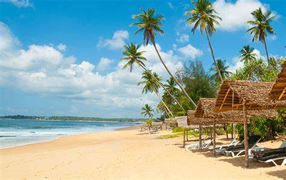

Ambuluwawa
Ambuluwewa The tower is visible from gampla train station. Ambuluwawa is a mountain hill. It is located in the Kandy District of the Central Province of Sri Lanka, and the mountain’s peak rises 3,567 feet above sea level.
It is mainly known for its scenic beauty, religious significance, and many attractions, especially the Ambuluwawa Tower — which is built on the top of this mountain peak.

Sinharaja forset
According to International Union for Conservation of Nature (IUCN), Sinharaja is the country's last viable area of primary tropical rainforest. Over 60% of the trees are endemic, many of them considered rare. 50% of Sri Lankan's endemics species of animals (especially butterfly, amphibians, birds, snakes and fish species)[clarification needed]. It is home to 95% endemic birds.

Nilaweli Beach
Nilaveli is located on the Eastern coast of Sri Lanka, approximately 275km from Colombo and 16km north of Trincomalee. You also can catch a flight from Colombo to Trincomalee, then go by road to Nilaveli from Trincomalee, which takes around 30 minutes.